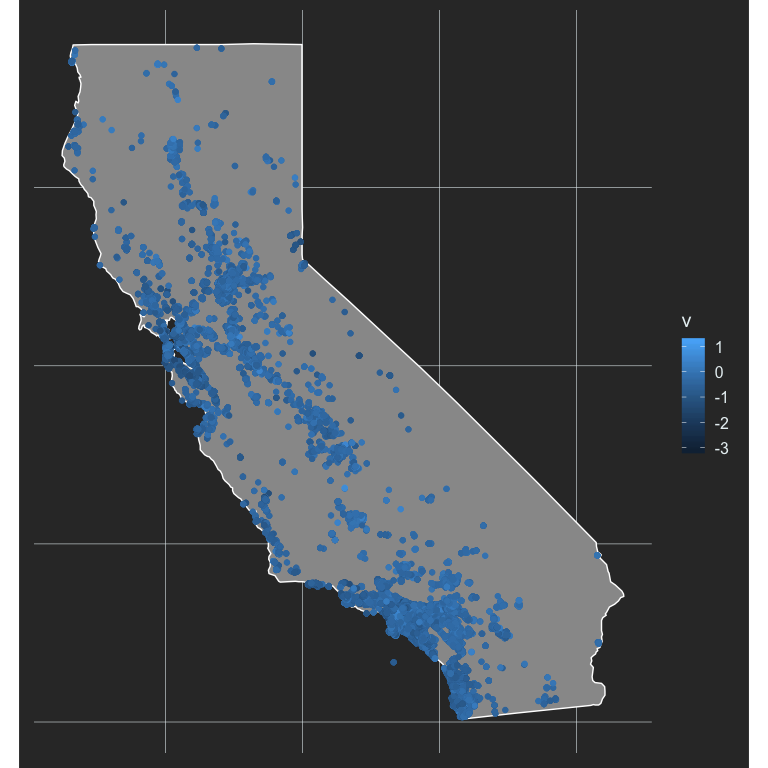
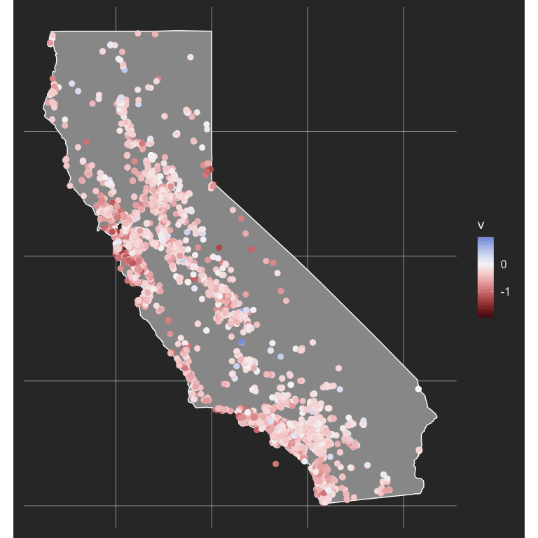
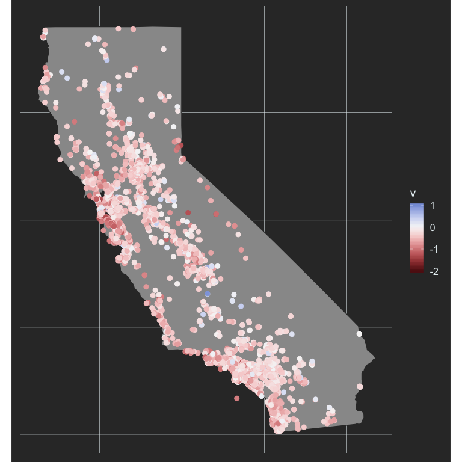

Exploring Geographic Variation in Achievement Gaps
Contents
This is, basically, the third post in a series of posts about estimating and, now, exploring achievement gap variation between schools. The first post described the method, while the second applied the method to estimate achievement gaps for all schools reporting data on students coded as Hispanic and White in California. That post included some preliminary explorations of the data, but this post will take that further by looking at the variance geographically.
The Data
We’ll use the same data we used in the last post, which represents school-level Hispanic-White achievement gap effect sizes for every school reporting data on both groups in California. To avoid going through all the gymnastics of creating the dataset, though, I’ve posted a file to my website repo. The code below should allow you to read the data directly from the repo.
library(tidyverse)
tmpfile <- tempfile()
download.file("https://github.com/datalorax/site/raw/master/content/post/v.rds",
tmpfile)
v <- read_rds(tmpfile)
v
## # A tibble: 36,345 x 7
## county_code district_code school_code grade test_id auc v
## <chr> <chr> <chr> <dbl> <chr> <dbl> <dbl>
## 1 01 10017 0125567 3 ELA 0.252 -0.945
## 2 01 10017 0125567 3 Mathematics 0.308 -0.709
## 3 01 10017 0125567 13 ELA 0.313 -0.690
## 4 01 10017 0125567 13 Mathematics 0.304 -0.724
## 5 01 31617 0131763 11 ELA 0.347 -0.556
## 6 01 31617 0131763 11 Mathematics 0.454 -0.163
## 7 01 31617 0131763 13 ELA 0.429 -0.253
## 8 01 31617 0131763 13 Mathematics 0.458 -0.150
## 9 01 61119 0111765 3 ELA 0.417 -0.297
## 10 01 61119 0111765 3 Mathematics 0.264 -0.893
## # … with 36,335 more rows
As before, we have v, which is the achievement gap effect size, for each grade, in English/Language Arts (ELA) and Mathetmatics, for every school. Let’s calculate an average achivement gap across these variables so we have a single estimate for each school (we could, of course, explore them separately, but we’ll go with the average for now).
v <- v %>%
group_by(county_code, district_code, school_code) %>%
summarize(v = mean(v, na.rm = TRUE))
If we want to look at these data geographically, we need to geocode the schools. That is, we need to know the longitude and lattitude. Luckily for us, California supplies this information publicly here. The code below will load the text file into R. The data are tab delimited, which is why we use read_delim with the delimiter set to tabs, "\t"
schools <- read_delim("https://www.cde.ca.gov/schooldirectory/report?rid=dl1&tp=txt",
delim = "\t")
schools
## # A tibble: 18,061 x 51
## CDSCode NCESDist NCESSchool StatusType County District School Street
## <chr> <chr> <chr> <chr> <chr> <chr> <chr> <chr>
## 1 011001… 0691051 No Data Active Alame… Alameda… No Da… 313 W…
## 2 011001… 0691051 10546 Closed Alame… Alameda… FAME … 39899…
## 3 011001… 0691051 10947 Active Alame… Alameda… Envis… 1515 …
## 4 011001… 0691051 12283 Closed Alame… Alameda… Aspir… 2125 …
## 5 011001… 0691051 12844 Active Alame… Alameda… Commu… 2111 …
## 6 011001… 0691051 12901 Active Alame… Alameda… Yu Mi… 1086 …
## 7 011001… 0691051 13008 Active Alame… Alameda… Urban… 5328 …
## 8 011001… 0691051 13772 Active Alame… Alameda… Epic … 1045 …
## 9 011001… 0691051 No Data Closed Alame… Alameda… Techn… 597 C…
## 10 011001… 0691051 09264 Active Alame… Alameda… Alame… 2500 …
## # … with 18,051 more rows, and 43 more variables: StreetAbr <chr>,
## # City <chr>, Zip <chr>, State <chr>, MailStreet <chr>,
## # MailStrAbr <chr>, MailCity <chr>, MailZip <chr>, MailState <chr>,
## # Phone <chr>, Ext <chr>, WebSite <chr>, OpenDate <chr>,
## # ClosedDate <chr>, Charter <chr>, CharterNum <chr>, FundingType <chr>,
## # DOC <chr>, DOCType <chr>, SOC <chr>, SOCType <chr>, EdOpsCode <chr>,
## # EdOpsName <chr>, EILCode <chr>, EILName <chr>, GSoffered <chr>,
## # GSserved <chr>, Virtual <chr>, Magnet <chr>, YearRoundYN <chr>,
## # FederalDFCDistrictID <chr>, Latitude <chr>, Longitude <chr>,
## # AdmFName1 <chr>, AdmLName1 <chr>, AdmEmail1 <chr>, AdmFName2 <chr>,
## # AdmLName2 <chr>, AdmEmail2 <chr>, AdmFName3 <chr>, AdmLName3 <chr>,
## # AdmEmail3 <chr>, LastUpDate <chr>
This data file has longitude and latitude, which we want, so we’ll need to join it. If we look at the documentation for the data, we’ll see that CDSCode is the California school ID. Let’s check that it uniquely identifies each school.
schools %>%
count(CDSCode) %>%
filter(n > 1)
## # A tibble: 0 x 2
## # … with 2 variables: CDSCode <chr>, n <int>
And it does! A little sleuthing reveals that this id is the combination of county_code, district_code, and school_code in our v file. Let’s recreate this ID variable in v, then join the files. We could use tidyr::unite to create the ID variable, but I want to keep the individual variables here for reasons that will become apparent later on, so I’ll do it through a call to dplyr::mutate instead.
v <- v %>%
mutate(CDSCode = paste0(county_code, district_code, school_code))
# Limit `schools` to just the variables we really want
schools <- schools %>%
select(CDSCode, Longitude, Latitude)
d <- left_join(v, schools)
d
## # A tibble: 6,451 x 7
## # Groups: county_code, district_code [849]
## county_code district_code school_code v CDSCode Longitude Latitude
## <chr> <chr> <chr> <dbl> <chr> <chr> <chr>
## 1 01 10017 0125567 -0.767 0110017… -122.189… 37.7783…
## 2 01 31617 0131763 -0.280 0131617… -121.965… 37.5589…
## 3 01 61119 0111765 -0.399 0161119… -122.286… 37.7818…
## 4 01 61119 0119222 -0.769 0161119… -122.287… 37.7790…
## 5 01 61119 0122085 -0.575 0161119… -122.285… 37.7764…
## 6 01 61119 0126656 -0.789 0161119… -122.271… 37.7727…
## 7 01 61119 0130229 -0.417 0161119… -122.245… 37.7649…
## 8 01 61119 0130609 -0.579 0161119… -122.287… 37.7790…
## 9 01 61119 0132142 -0.357 0161119… -122.289… 37.7727…
## 10 01 61119 0134304 -0.193 0161119… -122.281… 37.7757…
## # … with 6,441 more rows
Last thing, longitude and latitude are currently stored as characters, and we want them to be numeric.
d <- d %>%
mutate(Longitude = as.numeric(Longitude),
Latitude = as.numeric(Latitude))
And there we are!
A basic Map
Let’s start by at least trying to plot all of our data. First, we’ll get a map of California.
ca <- map_data("state") %>%
filter(region == "california")
head(ca)
## long lat group order region subregion
## 1 -120.0060 42.00927 4 667 california <NA>
## 2 -120.0060 41.20139 4 668 california <NA>
## 3 -120.0060 39.70024 4 669 california <NA>
## 4 -119.9946 39.44241 4 670 california <NA>
## 5 -120.0060 39.31636 4 671 california <NA>
## 6 -120.0060 39.16166 4 672 california <NA>
Now we can produce the map with a basic call to {ggplot2}, using geom_polygon.
ggplot(ca, aes(long, lat, group = group)) +
geom_polygon() +
coord_fixed(ratio = 1.3)

Let’s switch up the theme some. This is a slightly adapted version of Timo Grossenbacher’s theme he outlines here.
theme_map <- function(...) {
theme_minimal(base_size = 15) +
theme(
text = element_text(color = "#E7F0F2"),
axis.line = element_blank(),
axis.text.x = element_blank(),
axis.text.y = element_blank(),
axis.ticks = element_blank(),
axis.title.x = element_blank(),
axis.title.y = element_blank(),
panel.grid.major = element_line(color = "#E7F0F2", size = 0.2),
panel.grid.minor = element_blank(),
plot.background = element_rect(fill = "gray20", color = NA),
panel.background = element_rect(fill = "gray20", color = NA),
legend.background = element_rect(fill = "gray20", color = NA),
panel.border = element_blank(),
...
)
}
theme_set(theme_map())
Now we just expand that to include points for our schools, and color them by their achievement gap effect size.
ggplot(ca, aes(long, lat, group = group)) +
geom_polygon(fill = "gray60",
color = "white") +
geom_point(aes(Longitude, Latitude, color = v),
data = d,
inherit.aes = FALSE) +
coord_fixed(ratio = 1.3)

This is not terrifically helpful, in part because higher effect sizes are darker, and we already have them overlaid on a dark background (the state). Instead, this is probably a good place to use a diverging palette, where the middle of the color scale centers on 0 (no acheivement gap).
#install.packages("colorspace")
library(colorspace)
ggplot(ca, aes(long, lat, group = group)) +
geom_polygon(fill = "gray60",
color = "white") +
geom_point(aes(Longitude, Latitude, color = v),
data = d,
inherit.aes = FALSE,
size = 2.5) +
scale_color_continuous_diverging("Blue-Red3",
rev = TRUE) +
coord_fixed(ratio = 1.3)

Now we’re starting to get somewhere. We definitely have more gradation, but it’s still pretty tough to see a ton of variation. Maybe we can limit our scale a bit to highlight the variation better. Let’s look at our histogram of V again to see what might be reasonable values.
ggplot(d, aes(v)) +
geom_histogram(fill = "cornflowerblue") +
theme(axis.text.x = element_text(color = "#E7F0F2")) # add x-axis back in

From this plot, it looks like almost all of the data are greater than -2, but our axis goes all the way out to -3. Let’s limit it out to -2 and see what happens.
ggplot(ca, aes(long, lat, group = group)) +
geom_polygon(fill = "gray60",
color = "gray20") +
geom_point(aes(Longitude, Latitude, color = v),
data = d,
inherit.aes = FALSE,
size = 2.5) +
scale_color_continuous_diverging("Blue-Red3",
rev = TRUE,
limits = c(-2, 1)) +
coord_fixed(ratio = 1.3)

Much better! What if we limit it even further? If we limit it to values greater thant -1.5 and less that 0.5 we will still represent (table(d$v > -1.5 & d$v < 0.5)/length(d$v))[2])% of the data, which is 100%.
ggplot(ca, aes(long, lat, group = group)) +
geom_polygon(fill = "gray60",
color = "gray20") +
geom_point(aes(Longitude, Latitude, color = v),
data = d,
inherit.aes = FALSE,
size = 2.5) +
scale_color_continuous_diverging("Blue-Red3",
rev = TRUE,
limits = c(-1.5, 0.5)) +
coord_fixed(ratio = 1.3)

And now we’re really getting somewhere. We can see the variation even better, and it’s pretty clear that the highest achievement gaps are occurring in the bay area. let’s investigate further.
Interactive maps
I started by limiting the above maps to Alameda County, which includes the bay area, but instead I decided to go with some interactive mapping that start around Alameda county and you can move to wherever you’d like from there. When you’re dealing with larger scale data like this, interactive maps can be really beneficial. One of my favorite examples on the educational attainment of America by Kyle Walker whose work I really admire. He does a lot of amazing things that I think are fascinating, beautiful, and often really helpful (in the case of tools that he creates, such as {tidycensus}). The educational attainment map I’ve linked to above was built with mapbox, and it’s really intriguing to me, but it’s still on my “to learn” list and I haven’t dug into it much yet (maybe a later post!). So for now, let’s create a quick interactive map of California using {leaflet}.
Let’s first make a map that starts in the bay area. It’s amazing how easy this is.
library(leaflet)
# Figure out center-ish of alameda county
mean_geo <- d %>%
filter(county_code == "01") %>%
summarize(mean_long = mean(Longitude, na.rm = TRUE),
mean_lat = mean(Latitude, na.rm = TRUE))
# Make the map
leaflet() %>%
setView(lng = mean_geo$mean_long,
lat = mean_geo$mean_lat,
zoom = 8) %>%
addTiles()
Now we’ll add circles for each school
leaflet() %>%
setView(lng = mean_geo$mean_long,
lat = mean_geo$mean_lat,
zoom = 8) %>%
addTiles() %>%
addCircleMarkers(data = d, lng = ~Longitude, lat = ~Latitude)
Notice that after I’ve declared the data source, I can refer to variables within the data using ~.
Obviously, the above isn’t very helpful, but we’re getting there. Let’s change the color of these according to the achievement gap effect size, and again limit the data a bit so there’s higher contrast. I’m going to call the data subset object d_99 to remind myself that it has (actully more than) 99% of the overall data.
d_99 <- filter(d, v > -1.5, v < 0.5)
# Create a continuous color pallette of reds and blues
pal <- colorNumeric(palette = "RdBu",
domain = seq(1.5, -1.5, -0.01))
leaflet() %>%
setView(lng = mean_geo$mean_long,
lat = mean_geo$mean_lat,
zoom = 8) %>%
addTiles() %>%
addCircleMarkers(data = d_99, lng = ~Longitude, lat = ~Latitude,
color = ~pal(v),
stroke = FALSE,
radius = 5,
fillOpacity = 0.8)
Notice I’ve made the radius = 5 to make circles representing schools smaller and easier to see, and changed fillOpacity = 0.8 to make the circles 80% opaque. We could keep messing with this, of course, but we have a fairly nice interactive map already!
Last bit, let’s add a legend. This turns out to be trickier than I would have hoped/thought. My initial attempt looked like this
leaflet() %>%
setView(lng = mean_geo$mean_long,
lat = mean_geo$mean_lat,
zoom = 8) %>%
addTiles() %>%
addCircleMarkers(data = d_99, lng = ~Longitude, lat = ~Latitude,
color = ~pal(v),
stroke = FALSE,
radius = 5,
fillOpacity = 0.8) %>%
addLegend("bottomleft",
data = d_99,
values = ~v,
pal = pal,
title = "Hispanic-White <br/> Achievement Gap ES",
opacity = 0.7)
Which is actually correct but everything is kind of backwards. We have negative values going up vertically, rather than down, which feels a lot more natural. What I ended up doing is reversing the color palette, restricting the range to just the values I wanted, and then (to correct for the reversed palette) multiplied each value by -1.
Because I wanted to have the schools with no real achievement gap to sort of fade into the background, I also changed the default tiles to some that are mostly white, which again just sort of helps with the overall contrast.
# Create reversed color palette
pal_rev <- colorNumeric(palette = "RdBu",
domain = seq(-1.5, 1.5, 0.01),
reverse = TRUE)
leaflet() %>%
setView(lng = mean_geo$mean_long,
lat = mean_geo$mean_lat,
zoom = 8) %>%
addProviderTiles("CartoDB.Positron") %>% # Changed from `add_tiles()`
addCircleMarkers(data = d_99, lng = ~Longitude, lat = ~Latitude,
color = ~pal(v),
stroke = FALSE,
radius = 5,
fillOpacity = 0.8) %>%
addLegend("bottomleft",
values = seq(-0.5, 1.5, 0.25), # Restrict range
pal = pal_rev, # Use reversed color palette
labFormat = labelFormat( #
transform = function(x) x*-1 # Multiply by -1
), #
title = "Hispanic-White <br/> Achievement Gap ES",
opacity = 0.7)
One final edit
My good friend and colleague, Brock Rowley, was reviewing this post and said something along the lines of “It would really be nice if I could know the exact values for some of these schools.” So let’s make that happen! What we’ll do is just add a label to the circles, as below.
leaflet() %>%
setView(lng = mean_geo$mean_long,
lat = mean_geo$mean_lat,
zoom = 8) %>%
addProviderTiles("CartoDB.Positron") %>%
addCircleMarkers(data = d_99, lng = ~Longitude, lat = ~Latitude,
color = ~pal(v),
stroke = FALSE,
radius = 5,
fillOpacity = 0.8,
label = ~as.character(round(v, 2))) %>% # add label
addLegend("bottomleft",
values = seq(-0.5, 1.5, 0.25),
pal = pal_rev,
labFormat = labelFormat(
transform = function(x) x*-1
),
title = "Hispanic-White <br/> Achievement Gap ES",
opacity = 0.7)
And that’s it! Notice because it’s a label we had to transform it to character first. We could make it fancier, of course, but that’s the basic approach.
Conclusions
There’s a fair amount of achievement gap variance between schools in California, and there’s some evidence of geographic clustering too. This is certainly not unique to California, but understanding what is driving this geographical variation certainly seems like a good place to start if we’re going to try to start reducing these inequities.
Author Daniel Anderson
LastMod 2019-08-16